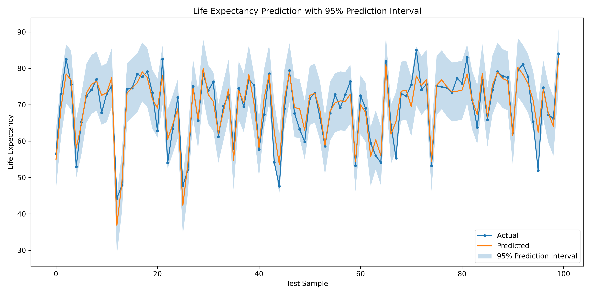
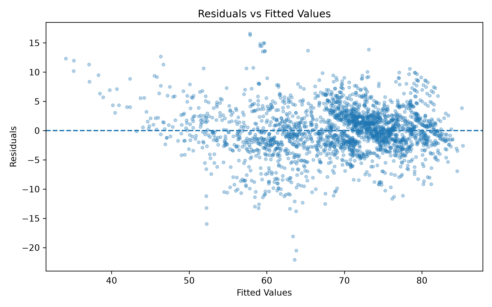
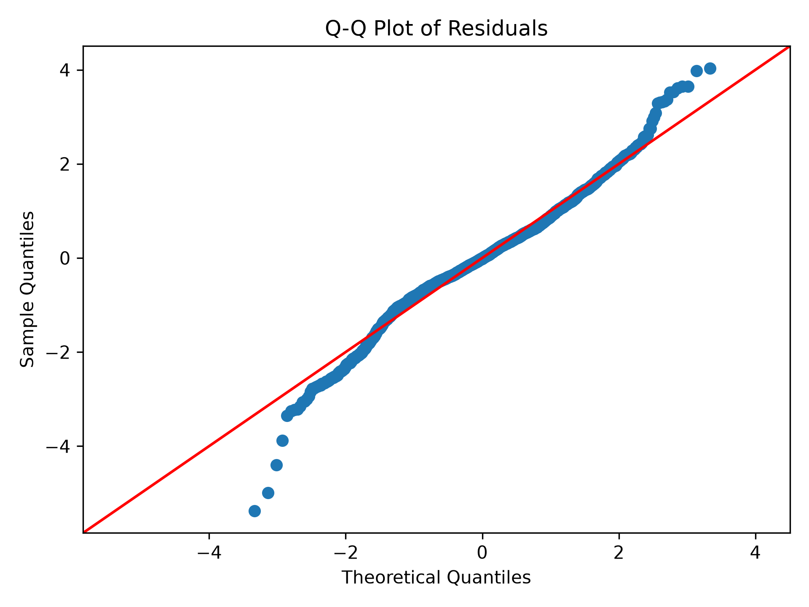
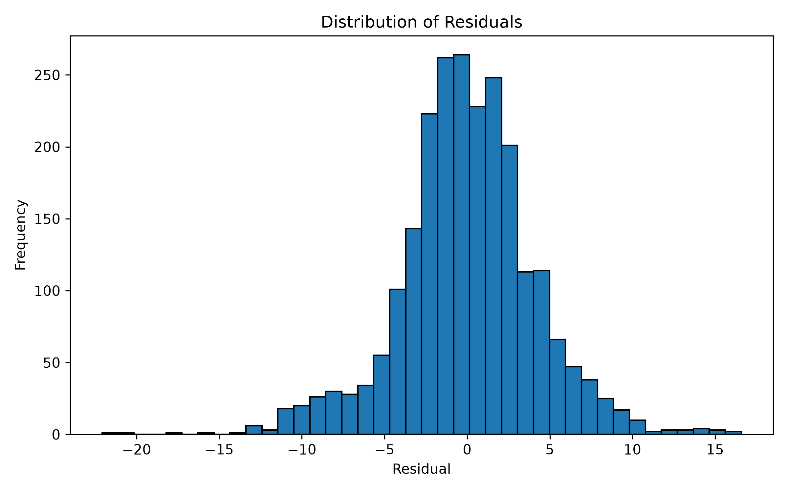

01 · Overview
模型預測結果
MAE
2.9256
YearsRMSE
3.9501
YearsR²
0.8196
Test SetAdjusted R²
0.8152
14 Features95% PI Coverage
94.37%
Prediction Interval02 · Problem
問題定義
本研究使用 WHO Life Expectancy Dataset， 以 Life expectancy 作為預測目標，利用國家健康狀況、死亡率、 疫苗接種率、BMI、教育、經濟及公共衛生等資訊， 建立 Multiple Linear Regression 模型。
原始資料共有 20 個輸入特徵。 在 Feature Selection 階段比較 SelectKBest 與 Recursive Feature Elimination（RFE）， 最終採用 RFE 選出的 14 個特徵建立主模型。
03 · CRISP-DM
分析流程
Business Understanding
建立可解釋的預期壽命預測模型， 分析健康及社經因素與 Life Expectancy 的關係。
Data Understanding
檢查資料規模、資料型態、 缺失值以及各變數的基本統計特性。
Data Preparation
移除 Target 缺失資料， 對數值欄位進行 Median Imputation， Status 使用 One-Hot Encoding。
Modeling
比較 Linear Regression、 Ridge 與 Lasso， 並搭配不同 Feature Selection 方法。
Evaluation
使用 MAE、MSE、RMSE、 R² 與 Adjusted R² 評估模型。
Deployment
將分析結果製作成 Web Dashboard， 並部署至 GitHub Pages。
04 · Feature Selection
RFE 最終選擇的 14 個特徵
05 · Model Evaluation
模型比較
| Feature Set | Model | Features | MAE | RMSE | R² | Adjusted R² |
|---|---|---|---|---|---|---|
| RFE | Linear Regression | 14 | 2.9256 | 3.9501 | 0.8196 | 0.8152 |
| RFE | Ridge | 14 | 2.9247 | 3.9507 | 0.8196 | 0.8151 |
| RFE | Lasso | 14 | 2.9237 | 3.9510 | 0.8195 | 0.8151 |
| All Features | Linear Regression | 20 | 2.9273 | 3.9515 | 0.8195 | 0.8131 |
| SelectKBest | Linear Regression | 14 | 3.0133 | 4.0603 | 0.8094 | 0.8047 |
最終選擇 RFE + Linear Regression。 RFE 將原始 20 個特徵降低至 14 個後， 仍維持最佳的 R² 與 Adjusted R²， 顯示 Feature Selection 能在降低模型複雜度的同時維持預測能力。
06 · Prediction Interval
95% Prediction Interval

Coverage = 94.37%
模型建立 95% Prediction Interval， 實際測試資料的涵蓋率為 94.37%， 與理論上的 95% 非常接近。
07 · Regression Assumptions
Five Regression Assumptions
Linearity
Partially Satisfied
Residuals 大致分布於 0 附近， 但仍可觀察到部分結構， 表示資料可能存在非線性關係。
Independence
Satisfied
Durbin-Watson = 2.014， 接近理想值 2， 殘差沒有明顯一階自相關。
Homoscedasticity
Not Satisfied
Breusch-Pagan p-value < 0.05， 表示存在顯著異質變異。
Normality
Not Fully Satisfied
Q-Q Plot 尾端偏離直線， Jarque-Bera p-value 顯著， 表示 Residuals 並非完全常態。
Multicollinearity
Partially Satisfied
多數特徵 VIF < 5， 但 infant deaths 與 under-five deaths 的 VIF 超過 150，存在高度共線性。
08 · Diagnostics
Residual Analysis

Residuals vs Fitted
用於檢查線性關係與殘差變異是否一致。

Q-Q Plot
中央區域接近理論直線， 但尾端具有較明顯偏離。

Residual Distribution
Residuals 大致集中於 0 附近， 但仍可觀察到較長尾端。
09 · VIF
Multicollinearity Analysis
修正後的 VIF 分析顯示， 大部分特徵的 VIF 低於 5， 代表沒有嚴重的多重共線性問題。
然而 under-five deaths 的 VIF 為 159.44， infant deaths 的 VIF 為 158.55。 兩項指標在概念上都與兒童死亡有關， 因此具有高度線性關聯。
10 · Conclusion
結論
R² = 0.8196
本研究完成從資料理解、缺失值處理、 Feature Selection、模型建立、 Model Evaluation 到 Regression Assumption 檢查的完整 CRISP-DM 流程。
最終使用 RFE 選出的 14 個特徵建立 Multiple Linear Regression， 測試集 R² 達 0.8196， Adjusted R² 為 0.8152， 顯示模型能解釋約 82% 的預期壽命變異。
雖然模型具有良好的整體預測能力， 但仍存在異質變異、殘差非完全常態， 以及部分高度共線性的特徵。 未來可進一步比較非線性模型， 或透過特徵重新設計改善模型假設。